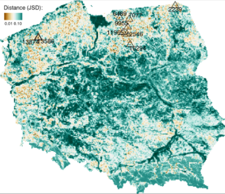
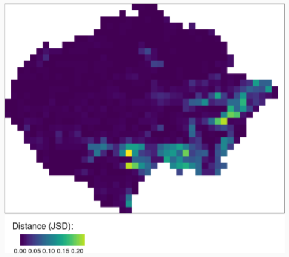
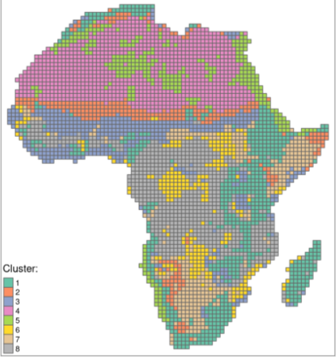

Remote Sensing
Misc
- Resources
- Types of Satellite Imagery
- Optical images : Images are taken by optical sensors (sensor is passive)
- Generally provide a high level of detail
- Limited by nighttime conditions and adverse weather.
- Radar images : Radars send an electromagnetic wave and measure the component backscattered by the objects on the ground (the sensor is active).
- Acquires data at any time of the day and with any meteorological conditions, as the wavelength of the transmitted wave allows it to penetrate clouds.
- Quality is degraded by speckle noise.
- Optical images : Images are taken by optical sensors (sensor is passive)
- Types of Measures
- Texture - Descriptive statistic that measures spatial relationships
- Values cannot be transferred from one situation to another
- e.g. you can’t say, “forests always have Contrast values between .5 and .7”
- Primarily useful in comparing one part of an image to another part
- For multi-image comparison (e.g. mosaic):
- The images analysed must be equivalent radiometrically, in regards to sun angle, and phenologically with regards to cyclically variable ground phenomena
- For multi-image comparison (e.g. mosaic):
- Values cannot be transferred from one situation to another
- Spectral - Descriptive statistics that essentially measure chemical properties of the ground objects
- Texture - Descriptive statistic that measures spatial relationships
- Spectral and spatial are very likely to be independent data and so complement one another
- Grey Level Co-occurrence Matrix (GCLM) - Used for texture measurements. A tabulation of how often different combinations of pixel brightness values (grey levels) occur in an image.
- PCA Issues
- Each new dataset requires recalculation of both, landscape metrics and principal components analysis (PCA)
- Highly correlated landscape metrics are used
- PCA results interpretation is not straightforward
- Information Theory (IT) Based Metrics
- Marginal Entropy [H(x)] - Diversity (composition) of spatial categories - from monothematic patterns to multithematic patterns
- Relative Mutual Information [U] - Clumpiness (configuration) of spatial categories from fragmented patterns to consolidated patterns)
- H(x) and U are uncorrelated
- Issues
- Relative mutual information is a result of dividing mutual information by entropy. What to do when the entropy is zero?
- How to incorporate the meaning of categories into the analysis?
Terms
- Normalized Difference Vegetation Index (NDVI) - A widely-used metric for quantifying the health and density of vegetation using sensor data. It is calculated from spectrometric data at two specific bands: red and near-infrared. The spectrometric data is usually sourced from remote sensors, such as satellites.
- Range: -1 and 1
- Interpretation
- 0: Area has nothing growing (e.g. Deserts)
- 1: Arean has dense, healthy vegetation
- <0: Suggest lack of dry land (e.g. oceans have NDVI = -1)
- Semantic Segmentation - The process of labelling pixels or regions of the image
- Essential in many applications including infrastructure planning, land cover, humanitarian crisis maps and environmental assessments.
- Speckle Noise - Granular interference due to bouncing properties of emitted radio waves that degrades the quality of images and therefore their interpretability with a human eye.
Pattern-based
- Enables spatial analyses of raster data such as searching, change detection, clustering, or segmentation
- Misc
- Notes from Analysis of Spatial Patterns: Current State and Future Challenges (Slides)
- Use-Cases
- Finding similar spatial structures (one-to-many)
- Take the normalized cove of the mountain (or other structure) and compare other local areas with it. (i.e. which coves are least dissimilar the mountain cove)
- Quantitative assessment of changes in spatial structures (one-to-one)
- This pic represents the change in land coverage in the Amazon from two different time periods
- Take the normalized coves from the earlier time period and make a one-to-one comparison (i.e. Calculate the difference in JSDs) with the coves of the currrent time period
- Areas with the greatest change have the highest JSD values.
- Clustering similar spatial structure (many-to-many)
- Cluster the normalized coves
- Metrics
- Intra-cluster heterogeneity - determines distances between all landscapes within a group
- Inter-cluster isolation - determines distances between a given group and all others
- Finding similar spatial structures (one-to-many)
- Steps
- Divide data into a large number of smaller areas (local landscapes)
- Represent each area using a statistical description of the spatial pattern - a spatial signature.
Most landscape metrics are single numbers representing specific features of a local landscape. Spatial signatures, on the other hand, are multi-element representations of landscape composition and configuration.
The basic signature is the co-occurrence matrix:
agriculture forest grassland water agriculture 272 218 4 0 forest 218 38778 32 12 grassland 4 32 16 0 water 0 12 0 2 - Land Coverage Categories: agriculture, forest, grassland, water, wetland, settlement, shrubland, sparse vegetation, bare area.
- Landform Categories: flat or nearly flat plains, smooth plains with some local relief, irregular plains with moderate relief, irregular plains with low hills, scattered moderate hills, moderate hills, scattered high hills, high hills, scattered low mountains, low mountains, scattered high mountains, high mountains, tablelands with moderate relief, tablelands with considerable relief, tablelands with high relief, tablelands with very high relief, surface water.
- I believe this is a comparison of two local landscapes where, for example, ag vs grass = 4 indicates there are 4 grid cells that coincide to a grassland in one local area and an agricultural area in the other local area.
A spatial signature should allow simplification to the form of a normalized vector
Normalized Co-Occurence Vector:
Co-Occurence Vector (cove) -
c(272, 218, 4, 0, 218, 38778, 32, 12, 4, 32, 16, 0, 0, 12, 0, 2)- Numbers are taken from the co-occurrence matrix (See above) where the rows are combined end-to-end to create a vector.
Simplified Co-Occurence Vector (cove) -
c(136 , 218, 19389, 4, 32, 8, 0, 12, 0, 1)- The process name wasn’t mentioned in the slide, but here, the cove has been simplified by creating a vector with the halved diagonal values and unique values of off-diagonal cells in the original cove (Doubt order matters).
Normalized Co-Occurence Vector
simple_cove <- c(136, 218, 19389, 4, 32, 8, 0, 12, 0, 1) moose <- as.matrix(simple_cove) round(simple_cove/norm(moose), 4) #> [1] 0.0069 0.0110 0.9792 0.0002 0.0016 0.0004 0.0000 0.0006 0.0000 0.0001
- Spatial signatures can be compared using a large number of existing distance or dissimilarity measures
- Dissimilarity
Measuring the distance between two signatures in the form of normalized vectors allows determining dissimilarity between spatial structures.
Example: Jensen-Shannon Divergence - Lower
cove_ref <- c(0.0069, 0.011, 0.9792, 0.0002, 0.0016, 0.0004, 0, 0.0006, 0, 0.0001) cove_x1 <- c(0.1282, 0.0609, 0.8105, 0.0002, 0.0002, 0.0001, 0, 0, 0, 0) cove_mat1 <- rbind(cove_ref, cove_x1) philentropy::JSD(cove_mat) #> jensen-shannon #> 0.06826663- A lower JSD means the two images are less dissimilar (i.e more similar)
Example: Jensen-Shannon Divergence - Higher
Area of Interest (cove_x1) # zeros added to match length of cov_x2 cove_ref_ext <- c(0.0069, 0.011, 0.9792, 0.0002, 0.0016, 0.0004, 0, 0.0006, 0, 0.0001, 0, 0, 0, 0, 0) cove_x2 <- c(0.2033, 0.1335, 0.2944, 0.1747, 0.0562, 0.1307, 0.0035, 0.0002, 0.0004, 0.0015, 0.0007, 0.0005, 0, 0, 0.0005) cove_mat2 <- rbind(cove_ref_ext, cove_x2) philentropy::JSD(cove_mat2) #> jensen-shannon #> 0.4444198- A higher JSD means the two images are more dissimilar.
- Dissimilarity
{kind=link}
{kind=link}
{kind=link}
{kind=link}
{kind=link}
{kind=link}